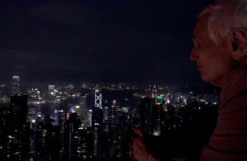

About the film
Filmmakers Ena and Ines Talakic follow legendary reporter Edward Jay Epstein, still going strong at 81, as he investigates Edward Snowden’s 2013 leak of classified documents on government surveillance. One of the last of his generation of journalists, the energetic, articulate, and boyish Epstein delights in his discoveries, and in skewering accepted truths. Part chronicle of shoe leather investigative reporting, part romp through a life lived at the top of the social chain, HALL OF MIRRORS takes us through Epstein’s most notable investigations, examining the Warren Commission’s work, the roots of the diamond industry, the strange career of Armand Hammer, and the inner workings of big-time journalism itself.
At the festival
- 2017 DC Premiere · Saturday, October 21, 2017 · 2:30 PM · The Naval Heritage CenterDiscussion with filmmakers to follow screening
More films on these topics
 The Black SwanMads Brügger2025 · 90 min
The Black SwanMads Brügger2025 · 90 min United States vs. Reality WinnerOPENING NIGHT: United States vs. Reality Winner2021 · 94 min
United States vs. Reality WinnerOPENING NIGHT: United States vs. Reality Winner2021 · 94 min Enemies of the StateSonia Kennebeck2020 · 104 min
Enemies of the StateSonia Kennebeck2020 · 104 min The Sludge WarGalassia Grassetto2026 · 80 min
The Sludge WarGalassia Grassetto2026 · 80 min The Accidental SpyAnthony Wonke2024 · 98 min
The Accidental SpyAnthony Wonke2024 · 98 min Phantom ParrotKate Stonehill2023 · 82 min
Phantom ParrotKate Stonehill2023 · 82 min